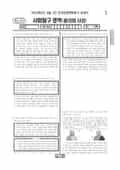

문제지


시험지를 먼저 풀어 보세요. 등급컷·표준점수·난이도는 흐리게 가려 뒀어요.
| 등급 | 원점수 | 표준점수 | 백분위 |
|---|---|---|---|
| 1 | 42 | 69 | 96 |
| 2 | 36 | 64 | 89 |
| 3 | 30 | 58 | 78 |
| 4 | 23 | 52 | 60 |
| 5 | 15 | 45 | 38 |
| 6 | 11 | 41 | 21 |
| 7 | 8 | 38 | 10 |
| 8 | 6 | 36 | 3 |
등급별 컷 · EBSi 원점수 추정 · 만점 50점
| 등급 | 표준점수 이상 | 인원(명) | 비율 |
|---|---|---|---|
| 1 | 69 | 1,298 | 4.68% |
| 2 | 64 | 1,885 | 6.79% |
| 3 | 58 | 3,244 | 11.69% |
| 4 | 52 | 4,976 | 17.94% |
| 5 | 45 | 6,593 | 23.76% |
| 6 | 41 | 4,249 | 15.32% |
| 7 | 38 | 3,746 | 13.5% |
| 8 | 36 | 1,031 | 3.72% |
| 9 | 31 | 721 | 2.6% |
시·도교육청 공개 자료
출처: 시·도교육청이 공개한 전국연합학력평가 성적 분석·통계자료(공개 자료 보기).
발행 기관: 시·도교육청(전국연합학력평가). 파일 위치: 이 사이트가 보관한 사본. 저작권은 발행 기관에 있습니다. 원본과 다르거나 게시 중단이 필요하면 연락처로 알려 주세요. 등급컷 출처 구분은 데이터 원칙에서 설명합니다.
막대 색은 역대 대비 난이도 · 진한 막대가 이 시험 · 막대를 누르면 그 회차로 이동
| 회차 | 1등급컷 | 표점 최고 | 1등급 표점 | 난이도 |
|---|---|---|---|---|
| 9월 학평2022년 고2이 시험 | 42 | 77 | 69 | 어려움 |
| 6월 학평2022년 고2 | 45 | 71 | 67 | 쉬움 |
| 3월 학평2022년 고2 | 50 | 64 | 64 | 매우 쉬움 |
| 11월 학평2021년 고2 | 43 | 75 | 69 | 보통 |
| 6월 학평2021년 고2 | 45 | 70 | 66 | 쉬움 |
| 3월 학평2021년 고2 | 48 | 65 | 63 | 매우 쉬움 |